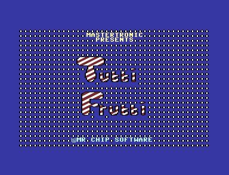

<meta charset="utf-8">
<meta name="viewport" content="width=device-width, initial-scale=1">
<title>Tutti Frutti</title>
<link rel="preconnect" href="https://fonts.googleapis.com">
<link rel="stylesheet" href="https://fonts.googleapis.com/css2?family=DM+Sans:wght@400;500;600;700;800;900&family=IBM+Plex+Mono:wght@400;500&display=swap">
<style>
:root{
  --bg:#23262d; --paper:#e9e7e1; --surface:#ffffff; --surface-2:#f1efea; --line:#d5d3cc; --line-soft:#e0ded8;
  --ink:#2f3136; --ink-soft:#55585f; --ink-mute:#80838a;
  --link:#1f5fa8; --link-hover:#154480; --accent:#1f5fa8;
  --amber:#c25a00; --cyan:#1f5fa8; --coral:#d04a3a; --green:#2a8a4a; --violet:#4a5bd6; --hl:#fff0c2;
  --chip:#2f3136; --chip-ink:#ffffff;
  --c64blue:#40318d; --c64grey:#686868;
  --fd:'DM Sans',system-ui,sans-serif; --fb:'DM Sans',system-ui,sans-serif; --fm:'IBM Plex Mono',ui-monospace,Menlo,monospace;
  --col:1080px; --gx:68px; --fs:17px; --lh:1.6; --hw:900; --h1:46px; --h2:26px; --sy:48px; --pp:26px; --r:10px;
  --plate-shadow:0 1px 2px rgba(0,0,0,.05),0 4px 14px rgba(0,0,0,.05);
}
*{box-sizing:border-box}
html{background:var(--bg);min-height:100%}
body{background:var(--paper);color:var(--ink);font-family:var(--fb);font-size:var(--fs);line-height:var(--lh);max-width:var(--col);margin:0 auto;min-height:100vh;padding:0 0 4rem}
h1,h2,h3{font-weight:var(--hw);letter-spacing:-.01em;text-wrap:balance;color:var(--ink);margin:0}
.wrap{padding:0 var(--gx)}
.hero{padding:48px var(--gx) 8px;text-align:left}
.eyebrow{font-family:var(--fm);font-size:12px;letter-spacing:.08em;text-transform:uppercase;color:var(--ink-mute);margin:0 0 10px}
.hero h1{font-size:var(--h1);line-height:1.15;letter-spacing:-.02em;margin:0 0 14px}
.hero .sub{margin:0 0 .6em;color:var(--ink-soft)}
section{padding:var(--sy) 0 24px}
section:last-of-type{border-bottom:none}
.fig{font-family:var(--fm);font-size:12px;letter-spacing:.08em;text-transform:uppercase;color:var(--ink-mute);margin:0 0 10px}
h2.t{font-size:var(--h2);margin-bottom:12px}
.lede{color:var(--ink-soft);margin:0 0 30px}
.plate{background:var(--surface);border:1px solid var(--line);border-radius:var(--r);padding:var(--pp);box-shadow:var(--plate-shadow)}
.cap{font-size:14px;color:var(--ink-mute);margin-top:14px;line-height:1.55}
.cap b{color:var(--ink);font-weight:700}
code{font-family:var(--fm);font-size:.82em;background:var(--chip);color:var(--chip-ink);border-radius:4px;padding:2px 6px;overflow-wrap:break-word;-webkit-box-decoration-break:clone;box-decoration-break:clone}

</style>

<style>
:root{--accent:#87403e;--link:#853e3c;--link-hover:#5e2a29;--ink-mute:#62666c}
.tf-pair{display:grid;grid-template-columns:repeat(2,minmax(0,1fr));gap:16px}
.tf-pair figure,.tf-figure{margin:0}
.tf-image{display:block;width:100%;height:auto;image-rendering:pixelated;background:#202020;border-radius:5px}
.tf-frame{position:relative;max-width:640px;margin:0 auto;background:#080808}
.tf-frame canvas,.tf-orchard{display:block;width:100%;height:auto;image-rendering:pixelated}
.tf-frame.tf-grid::after{content:"";position:absolute;inset:0;pointer-events:none;background-image:linear-gradient(to right,#ffffff55 1px,transparent 1px),linear-gradient(to bottom,#ffffff55 1px,transparent 1px);background-size:2.5% 4%}
.tf-panel{background:#242228;color:#f3efed}
.tf-panel .cap{color:#dbd0cc}
.tf-controls{display:flex;align-items:center;flex-wrap:wrap;gap:8px 12px;margin:0 0 14px}
.tf-controls label{display:inline-flex;gap:7px;align-items:center}
.tf-controls input[type=range]{width:min(310px,100%);accent-color:var(--accent)}
.tf-controls input[type=checkbox]{accent-color:var(--accent)}
.tf-controls select,.tf-controls button{font:inherit;color:var(--ink);padding:7px 10px;background:#fff;border:1px solid #aaa49c;border-radius:5px}
.tf-controls button{cursor:pointer}
.tf-controls button:hover:not(:disabled){border-color:var(--accent)}
.tf-controls button:disabled{opacity:.45;cursor:default}
.tf-controls button[aria-pressed=true]{background:#eed9d5}
.tf-controls :focus-visible,.tf-orchard:focus-visible{outline:3px solid #97574f;outline-offset:2px}
.tf-table{width:100%;border-collapse:collapse;text-align:left}
.tf-table th,.tf-table td{padding:9px 10px;border-bottom:1px solid var(--line-soft);vertical-align:top}
.tf-table th{font-size:.86em}
.tf-out{display:block;padding:10px 12px;background:var(--surface-2);border-radius:5px;font-family:var(--fm);font-size:.82em;min-height:2.6em}
.tf-board{max-width:640px;margin:0 auto 14px;background:#080808}
.tf-board canvas{cursor:crosshair}
.tf-shape{display:grid;place-items:center;min-height:192px;background:#080808;border-radius:5px;margin:12px 0}
.tf-shape canvas{width:144px;height:144px;image-rendering:pixelated}
.tf-status{color:var(--ink-soft);font-size:.85em}
.tf-foot{font-size:.85em;color:var(--ink-soft);margin-top:32px}
@media(max-width:680px){:root{--gx:20px;--h1:37px;--fs:16px;--pp:15px;--sy:30px}.tf-table td,.tf-table th{padding:8px 5px}}
@media(max-width:500px){.tf-pair{grid-template-columns:1fr}}
</style>
<!-- tabs -->
<header class="hero">
  <p class="eyebrow">1985 · Mastertronic · Commodore 16 / Plus/4</p>
  <h1>Tutti Frutti</h1>
  <p class="sub">The strawberry, apples, and even the ball are built from the same eight-by-eight character cells as the score.</p>
</header>
<main class="wrap">
<section id="pieces">
  <h2 class="t">The moving fruit</h2>
  <p>A moving figure needs different pieces as it crosses a cell boundary. The draw records at <code>$3E80</code> give the strawberry’s pieces and their positions. An Acid Apple uses the same positions with a different group of patterns. Fruit has its own records at <code>$3400</code>.</p>
  <div class="plate">
    <div class="tf-controls">
      <label>Shape <select id="tf-kind">
        <option value="strawberry">Super Strawberry</option><option value="enemy">Acid Apple</option>
        <option value="falling">Falling Bad Apple</option><option value="apple">Sliding Bad Apple</option>
        <option value="cherry">Sliding cherry</option>
        <option value="static">Standing fruit</option><option value="ball">Ball</option><option value="crush">Crushed cherry</option>
      </select></label>
      <label>Direction <select id="tf-direction">
        <option value="0">Left</option><option value="1">Right</option><option value="2">Vertical</option>
      </select></label>
      <button type="button" id="tf-animate" aria-pressed="false">Animate</button>
    </div>
    <div class="tf-controls"><label for="tf-phase">Drawing phase</label><input type="range" id="tf-phase" min="0" max="1" value="0"></div>
    <div class="tf-shape"><canvas id="tf-shape" width="24" height="24" aria-label="Fruit assembled from its original TED character patterns"></canvas></div>
    <output id="tf-shape-info" class="tf-out" aria-live="polite">Loading the listing…</output>
    <p class="cap">Each entry lists the glyph codes on screen. The ball uses four quarter-cell positions. The crush uses four successive groups of cells.</p>
  </div>
</section>
<section id="publisher">
  <h2 class="t">The Mastertronic loading screen</h2>
  <p>The packed PRG opens on a BASIC screen that assembles the striped lettering from its own character patterns. The engine then loads a different set of character patterns for the orchard.</p>
  <figure class="tf-figure">
    
    <figcaption class="cap">The first screen from the supplied PRG. BASIC prints the letter cells from <code>$10D0</code>.</figcaption>
  </figure>
</section>
</main>
<footer class="wrap tf-foot">
  Game by Shaun Southern for Mr. Chip Software. <a href="https://github.com/gamesexplained/gamesexplained">Games Explained</a> · <a href="https://creativecommons.org/licenses/by-sa/4.0/">CC BY-SA 4.0</a> text · <a href="https://opensource.org/licenses/MIT">MIT</a> page code.
</footer>
<script src="../../lib/c16.js"></script>
<script>
/* tutti-shapes */
function drawingCells(ram, kind, direction, phase) {
  const four = [0,1,40,41];
  if (kind === 'ball') return [[0, 0x2C + phase, 0x71]];
  if (kind === 'static' || kind === 'crush') {
    const start = kind === 'crush' ? 0x30 + phase * 4 : phase === 0 ? 0x40 : 0x68;
    return four.map((offset, i) => [offset, start + i, 0x5A]);
  }
  const actor = kind === 'strawberry' || kind === 'enemy';
  const group = actor ? 2 * direction + phase : (direction === 2 ? 4 : 0) + phase;
  const first = ram[(actor ? 0x3E80 : 0x3400) + group];
  const end = ram[(actor ? 0x3E86 : 0x3408) + group];
  const chars = actor ? 0x3E8C : 0x3410;
  const offsets = actor ? 0x3EAA : 0x343C;
  const bias = kind === 'enemy' ? 0x1E : kind === 'cherry' ? 0x28 : 0;
  return Array.from({length: end - first}, (_, k) => {
    const i = first + k;
    const attr = actor ? 0x79 : kind === 'falling' ? 0x08 : 0x5A;
    return [ram[offsets + i], ram[chars + i] + bias, attr];
  });
}
// end of tutti-shapes
const kind = document.getElementById('tf-kind');
const direction = document.getElementById('tf-direction');
const phase = document.getElementById('tf-phase');
const toggle = document.getElementById('tf-animate');
const info = document.getElementById('tf-shape-info');
if (typeof C16 === 'undefined') {
  info.textContent = 'The shape viewer uses the built site’s Commodore renderer.';
} else {
  C16.load('listing.json').then(({ram}) => {
    const canvas = document.getElementById('tf-shape');
    const ctx = canvas.getContext('2d');
    const period = {strawberry: 80.3, enemy: 85.6, falling: 20.1, apple: 20.1, cherry: 20.1, crush: 160.5};
    let timer;
    function update() {
      const cells = drawingCells(ram, kind.value, Number(direction.value), Number(phase.value));
      const mem = ram.slice();
      for (const [offset, glyph, attr] of cells) {
        mem[0x800 + offset] = attr;
        mem[0xC00 + offset] = glyph;
      }
      const ted = Array(32).fill(0);
      ted[6] = 0x1B;
      ted[7] = 0x98;
      ted[0x13] = 0x38;
      ted[0x14] = 8;
      ted[0x16] = 0x32;
      ted[0x17] = 0x35;
      const pic = C16.render(mem, ted, {size: 0x4000});
      const width = canvas.width, height = canvas.height;
      const px = new Uint8Array(width * height);
      for (let y = 0; y < height; y++) px.set(pic.px.subarray(y * pic.w, y * pic.w + width), y * width);
      ctx.putImageData(new ImageData(C16.rgba({w: width, h: height, px}), width, height), 0, 0);
      info.textContent = `Phase ${Number(phase.value) + 1} of ${Number(phase.max) + 1} · glyphs ${cells.map(cell => cell[1].toString(16).toUpperCase().padStart(2,'0')).join(' ')}`;
    }
    function setAnimation(on) {
      clearInterval(timer);
      toggle.setAttribute('aria-pressed', on);
      toggle.textContent = on ? 'Pause animation' : 'Animate';
      if (on) timer = setInterval(() => {
        phase.value = (Number(phase.value) + 1) % (Number(phase.max) + 1);
        update();
      }, period[kind.value]);
    }
    function configure() {
      const actor = kind.value === 'strawberry' || kind.value === 'enemy';
      const movable = ['strawberry','enemy','apple','cherry'].includes(kind.value);
      direction.disabled = !movable;
      direction.options[1].disabled = !actor;
      if (!actor && direction.value === '1') direction.value = '0';
      if (kind.value === 'falling') direction.value = '2';
      phase.max = actor || kind.value === 'static' ? '1' : '3';
      phase.value = '0';
      toggle.disabled = kind.value === 'static' || kind.value === 'ball';
      setAnimation(false);
      update();
    }
    kind.addEventListener('change', configure);
    direction.addEventListener('change', update);
    phase.addEventListener('input', update);
    toggle.addEventListener('click', () => setAnimation(toggle.getAttribute('aria-pressed') !== 'true'));
    configure();
  }).catch(error => { info.textContent = error.message; });
}
</script>
